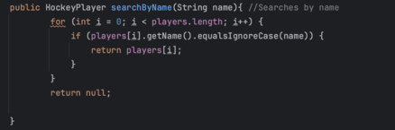

Searching Algorithms
Linear Search
Linear searching is very simple but also very inefficient. To perform linear searching all one needs is one loop.
One will iterate through a loop (usually for) and once the element is found, it will return the element.

Visual representation of how Linear Search works
Code representation of how Linear Search works.
You need the for loop in order to run through all of the elements of the array
You need the if to ensure that the array index has the same value as the element you are searching for.
If not continue looping, but if it is you will need a return to return the index of the found element.
You must return null if the element is simply not found in the array.
Binary Search
Binary search is a more complex and efficient searching algorithm. Binary search cuts the list in half and compares the value being searched to the midpoint.
If the midpoint is greater, the right half is discarded, while if the midpoint is smaller the left half is discarded. This process will continue until
the value is found. A downside however is that Binary search must already be sorted for it to function because it is unable to discard the right or left half
if the program cannot confirm if the midpoint is smaller or not.

Visual representation of how Binary Search works

Code representation of how Binary Search works
I start off by calling the sorted method because binary search needs to start off sorted.
I declare and initialize l(left) as 0, and r(right) as the arrays length which represents the end.
I used a while loop to make sure that the left value was never greater than the right value
Afterwards, you must declare the middle point which uses the formula l+(r-l)/2 to find what the middle of the array is.
Then you start off with the condition if the index is equal to the element we are searching for return the index
Then you move onto if the index is smaller than the element we are searching for, scrap the left side and make the left one more than the middle point
if the index is bigger than the element we are searching for however, scrap the right side and make the right one less than the middle point
Finally, if the program runs through the entire array and does not find the element, return null.